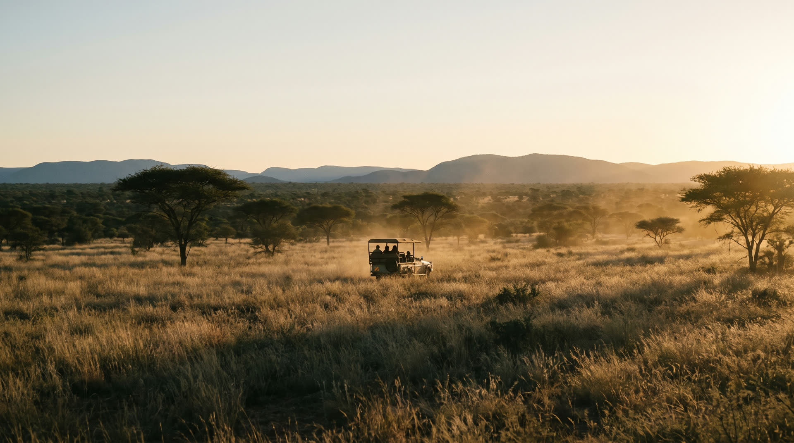

The expedition
Eight nights, one expedition log.
Activities take place across Dinokeng Big 5 Game Reserve, including at Mongena Private Game Reserve, an exclusive concession within Dinokeng, guided throughout by qualified rangers.
Day by day
The itinerary.
Day 01
Arrival & Welcome to Dinokeng
Reception at OR Tambo International Airport and a private group transfer of roughly an hour to Dinokeng. Check-in, a welcome meal, and the full safety briefing, which covers how to behave in a free-roaming Big Five environment and is not optional.
Each explorer receives their Conservation Passport before the first night.
Day 02
Understanding South Africa’s Conservation Landscape
An introduction to the ecosystems of the reserve and the pressures on them: which species are in trouble here, why, and who decides what happens next.
The first bush walk covers tracking basics, walking discipline and how to read ground. The day closes with a sundowner game drive.
Day 03
Conservation in the Field
A working day. Wildlife monitoring and camera-trap demonstrations, then habitat restoration: clearing invasive species and replanting indigenous stock.
This is deliberately the least glamorous day of the eight. It is also the one that most accurately represents what conservation work is.
Day 04
Wildlife & Biodiversity Day
Full-day game drives at Mongena Private Game Reserve, tracking toward a Big Five sighting with Mongena’s own rangers.
A guided bird and plant identification walk, and an evening conservation talk. Sightings are never guaranteed; tracking is the skill being taught, not the outcome.
Day 05
Predators & Nature Awareness
An excursion to the Kevin Richardson Wildlife Sanctuary, including an honest look at captive-predator welfare and the ethics around it.
A nature-awareness and bush-skills session, then a night drive to observe nocturnal species.
Day 06
Sleeping Under the Stars
A wildlife radio-telemetry monitoring demonstration by day: how individual animals are collared, tracked and protected.
That night, the group sleeps on an open sleep-out platform. No tents and no walls, under supervision, with the reserve audible in every direction. For most explorers this is the night they remember.
Day 07
People, Culture & Conservation
A structured discussion on human-wildlife coexistence, followed by a cultural exchange with a local community.
A leadership and teamwork workshop closes the day, drawing the week’s field experience into something the explorer can articulate.
Days 08–09
Legacy Day & Departure
Final reflections written into the Conservation Passport, short explorer presentations on what they learned and what they intend to do with it, and a certificate ceremony.
Transfer back to OR Tambo for departure.
Activities may be reordered for weather, wildlife movement and reserve access. The sequence above reflects the shape of the expedition, not a fixed schedule.
A day in the life
What happens between two o’clock and six.
Parents ask this and almost nobody answers it. Here is a representative full day in the field, start to finish.
| Time | What is happening |
|---|---|
| 05:15 | Wake-up call. Tea, coffee and rusks at the fire. |
| 05:45 | Morning game drive. The coolest hours are the most active ones, so this is when tracking happens. |
| 09:00 | Breakfast back at the lodge. |
| 10:00 | Field session: monitoring, camera traps, spoor casting or habitat work depending on the day. |
| 12:30 | Lunch, then a supervised rest period. It is genuinely hot, and the wildlife is inactive. |
| 14:00 | Classroom or shaded session: species identification, conservation theory, Passport entries written up. |
| 15:30 | Free time inside the fenced lodge area. Swimming, journals, cards, staff on hand. |
| 16:15 | Afternoon game drive, running through the golden hour. |
| 18:30 | Sundowners at a viewpoint, non-alcoholic, and the day’s sightings logged as a group. |
| 19:30 | Dinner. |
| 20:30 | Evening session: guest talk, night sky, or a night drive if scheduled. |
| 21:30 | Phone window and calls home where scheduled. |
| 22:00 | Lights out. Supervising adults are accommodated in the same lodge and are available through the night. |
Expectation setting
Field intensity.
Early starts and full days. Walking on uneven ground for up to two hours at a time in heat. No specialist fitness is required, but this is not a resort holiday.
If your child has a mobility consideration, an asthma trigger or anything else that affects walking in heat, tell us at application and we will give you a straight answer about whether it works.
The Conservation Passport
Every explorer carries one.
The Passport is issued on the first night and collected nothing but stamps and handwriting for eight days. Each sighting, skill and site visit earns a stamp, and every stamp has to be earned by recording something: what was seen, where, when, and what it indicated.
By Legacy Day it is a primary record of the expedition written by the explorer, not a souvenir printed by us. It goes home with them.
- Cheetah · Spotted
- Rhino · Tracked
- Fish Eagle · Logged
- Elephant Herd · Monitored
Curriculum taught
What they actually learn.
Wildlife Tracking & Spoor Identification
Reading prints, gait, dung and feeding sign to work out which animal passed, when, and what it was doing.
Bird & Plant Identification
Field-guide technique for the reserve’s key species, by silhouette, call and habit.
Biodiversity & Habitat Science
How this ecosystem functions, what indicates health, and what specifically threatens it here.
Endangered Species Monitoring
How conservation teams collect, store and actually use monitoring data on threatened populations.
Human-Wildlife Coexistence
Direct exposure to the economics and politics of living beside dangerous animals.
Leadership & Personal Development
Small-group challenge, structured reflection, and a closing action plan each explorer writes themselves.
What to bring
Pack light. Pack right.
A full kit list goes to every family once a place is confirmed. Most of this is already in the cupboard.
Clothing
- Neutral colours: khaki, olive, brown
- Long sleeves and trousers for dawn and dusk drives
- A warm layer for the sleep-out night
- Closed walking shoes, already worn in
- Sun hat
Gear
- Reusable water bottle
- Headlamp or torch
- Small daypack
- Sunscreen and insect repellent
- Camera or phone, with a spare cable
Documents & health
- Passport valid for at least six months
- Any visa required for South Africa
- Travel insurance details, arranged by parents
- All medication, clearly labelled
- Emergency contact card
Leave at home
- Bright white or brightly coloured clothing
- Valuables and jewellery
- Excess electronics and gaming devices
- Aerosols and strong-scented toiletries